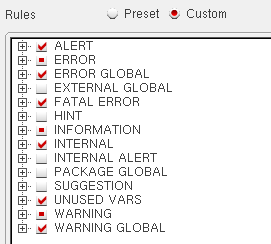
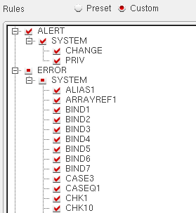

Setting Lint Options
The Lint command lets you set the Lint parameter values before running the Lint tool. To set the Lint parameters:
-
Select Options – Lint or click
 (Lint Options) in the in the Lint Manager assistant window or
(Options) in the Edit toolbar. The Options assistant displays with Lint as the active tab.
(Lint Options) in the in the Lint Manager assistant window or
(Options) in the Edit toolbar. The Options assistant displays with Lint as the active tab.

-
In the Package Prefixes field, type a list of acceptable package prefixes for functions and global variables (for example,
tr). SKILL Lint notes any variables that do not have one of the prefixes you typed.
As prefixes are not normally used on local variables, you can find variables that you meant to declare as local but they have a prefix. You can also use this field to determine whether your SKILL program uses a global from some other program. See Check Function and Global Variable Prefixes for more information. -
In the Global Variables field, type the list of global variables in the code that SKILL Lint should check. SKILL Lint suppresses
VAR8warnings for the global variables specified in this field. -
From the Code Version drop-down list, select the release version of the code you want SKILL Lint to check.
The checks for Cadence SKILL functions available in a particular release are applicable only when the Cadence Functions option is selected in the Rules: Preset section. - In the External Files field, browse or type a list of contexts or files that contain the macro definitions on which the code under analysis depends. This is used for loading external definitions files for functions and macros.
-
In the Output section, select one or both of the check boxes to specify where you want to direct the SKILL Lint output.
If you select both check boxes, output appears in the output window after SKILL Lint writes it to theCDS.logfile and the CIW. If you want SKILL Lint to write its output report to a file, use the Report File Name field (below). -
In the Report File Name field, browse or type the name of the file to which you want to write the SKILL Lint output report.
= 100 - [ 25*(number of short list errors) + 20*(number of long list errors) / (number of top level forms) ]
See SKILL Lint PASS/FAIL and IQ Algorithms.
A line in the output report contains the following information:-
Message group priority, usually abbreviated and capitalized (for example,
INFO). -
Built-in message name, in parentheses and capitalized (for example,
(REP110)). -
Message text (for example,
Total information: 0.).
-
Message group priority, usually abbreviated and capitalized (for example,
-
In the Rules section, click Preset to apply system-defined rules or Custom to apply user-defined rules to the SKILL Lint report.
If you click Preset, select one or more of the following check boxes to specify the message groups you want SKILL Lint to report: Errors, Warnings, Information, Undefined functions, Performance, and Cadence Functions.
Cadence public functions should start with a lowercase character; the custom functions should start with an uppercase character.
The Cadence Functions check box turns theALERTmessage group in the Custom section on or off. If turned on, SKILL Lint reports code that might result in an alert when the code is run.
If you click Custom, a hierarchical tree of the available types of error reporting mechanisms displays in the area within the Rules section. Select the check boxes adjacent to the different classes of messages you want SKILL Lint to report.
 -
Click the + sign to expand the corresponding message group as shown in the figure below.

Selecting the check box corresponding to a
Related Topics
Setting Up Files/Directories for the Lint Checker
Return to top